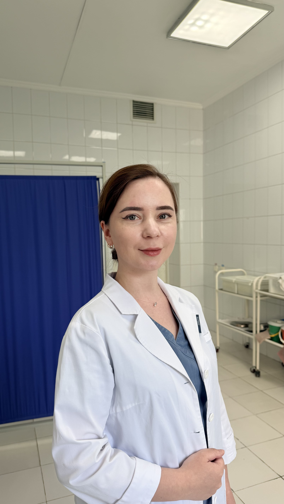

Регулярные осмотры, кольпоскопия, УЗИ, цитология. Спокойно, без спешки и осуждения. Так выглядит забота о здоровье, когда ничего пока не болит.

♡Большинство серьёзных гинекологических проблем — от дисплазии до миомы — на ранней стадии не имеют симптомов. Они находятся именно на плановом осмотре.
Регулярное наблюдение нужно не для того, чтобы найти проблему. А чтобы вовремя её исключить — и спокойно жить дальше.
Многие мои пациентки приходят на ежегодный осмотр уже 5–7 лет. Я помню вашу историю — не нужно каждый раз пересказывать заново.
Подробнее обо мне →Запишитесь — обычный осмотр без катастрофизации. Чем дольше откладывать, тем тревожнее.
Записаться